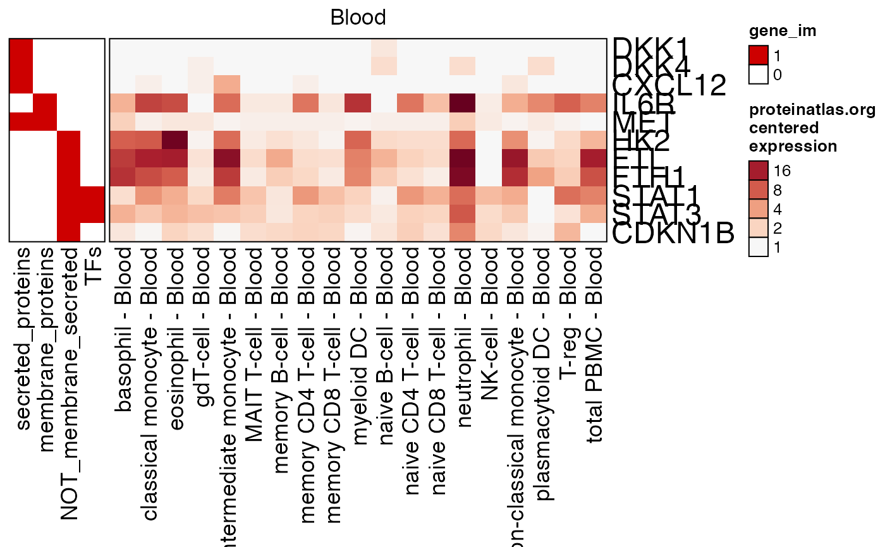
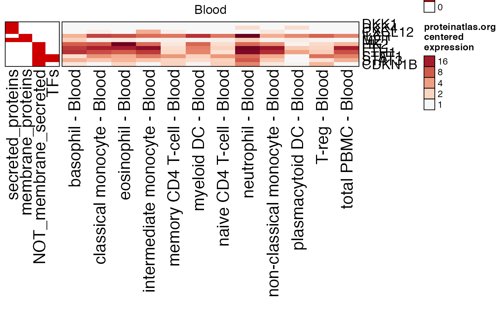

R/pajam-data.R
proteinatlas_genesets_fdb11.RdProtein Atlas useful genesets for visualization
proteinatlas_genesets_fdb11
list of character vector, whose values match
rownames(proteinatlas_expr_fdb11).
This object includes a list of genesets in the form of
character vectors of rownames aligned with
proteinatlas_expr_fdb11. The genesets are some useful
annotations for visualization that include:
"Plasma" - found in circulating blood plasma
"secreted_proteins" - secreted proteins
"membrane_proteins" - membrane-bound proteins
"FDA" - gene targets of FDA-approved drugs
"NOT_membrane_secreted" - non-membrane and non-secreted proteins (intracellular)
"TFs" - transcription factors
"HKs" - housekeeper genes
"rna_lymphoid" - RNA-lymphoid associated genes
The annotations are not intended to be fully exhaustive, but are intended to represent some useful annotations not necessarily associated directly with the biological function of each gene/protein. For example, it may be useful to see whether most up-regulated proteins are secreted or intracellular, or perhaps most up-regulated gene transcripts are transcription factors and are not secreted.
Other pajam data:
proteinatlas_expr_fdb11
use_im <- c("secreted_proteins", "membrane_proteins", "NOT_membrane_secreted", "TFs"); proteinatlas_im <- list2im_opt(proteinatlas_genesets_fdb11[use_im]); test_genes <- c("DKK1","DKK4","CXCL12","IL6R","MET", "HK2","FTL","FTH1","STAT1","STAT3","CDKN1B"); proteinatlas_heatmap(genes=test_genes, type="Blood", centered=TRUE, gene_im=proteinatlas_im);proteinatlas_heatmap(genes=test_genes, type="Blood", centered=TRUE, column_filter=4, row_cex=0.8, column_names_max_height=grid::unit(12, "cm"), gene_im=proteinatlas_im);